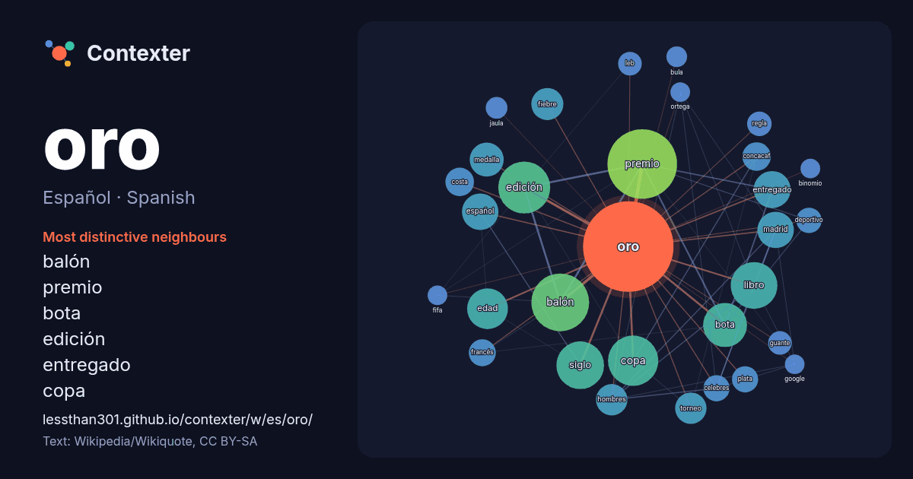

Español · Spanish · word of the day list
oro
“gold” · The words found around it in 1125 instances from Spanish Wikipedia, Wikiquote.

Most distinctive neighbours
- balón 75×
- premio 46×
- bota 46×
- edición 36×
- entregado 31×
- copa 30×
- fiebre 24×
- libro 21×
- edad 19×
- concacaf 19×
- celebres 17×
- medalla 16×
- madrid 16×
- siglo 15×
- leb 14×
- guante 14×
- español 12×
- regla 12×
- torneo 12×
- jaula 12×
× = how many times more often than in general Spanish Wikipedia text.
Most frequent neighbours
- premio 113
- balón 78
- edición 63
- copa 59
- siglo 53
- libro 51
- bota 45
- edad 39
- entregado 32
- español 31
- madrid 31
- medalla 27
- nombre 25
- fiebre 24
- hombres 23
- torneo 23
- provincia 22
- municipio 20
- concacaf 19
- costa 19
In context
- El oro es un elemento químico cuyo número atómico es 79. Está ubicado en el grupo 11 de la tabla periódica. Es un metal precioso blando de color amarillo Wikipedia snippets · Oro
- aciron, aillon, arce, arce morisco, asa, asar, ácer, ácere, endrino negro, oró, orón, oron, ásar, yarra. Nombre vulgar preferido en castellano, en Árboles: Wikipedia snippets · Acer opalus
- El patrón oro es un sistema monetario que fija el valor de la unidad monetaria en términos de una determinada cantidad de oro. El emisor de la divisa Wikipedia snippets · Patrón oro
- El Balón de Oro (en francés: Ballon d'Or) es un premio para jugadores profesionales de fútbol otorgado anualmente por la revista francesa especializada Wikipedia snippets · Balón de Oro
- La Insigne Orden del Toisón de Oro es una orden de caballería fundada en 1429 por el duque de Borgoña y conde de Flandes, Felipe III de Borgoña. Es una Wikipedia snippets · Orden del Toisón de Oro
- El Siglo de Oro español es un periodo histórico en que florecieron el pensamiento, el arte y las letras españolas, y que coincidió con el auge político Wikipedia snippets · Siglo de Oro
- Los premios TP de Oro fueron unos galardones españoles otorgados anualmente por la revista Teleprograma (TP) mediante votación de sus lectores, que distinguían Wikipedia snippets · TP de Oro
- El término edad de oro proviene de la mitología griega y fue recogido por primera vez por el poeta griego Hesíodo. Se refiere al mito respecto a una etapa Wikipedia snippets · Edad de oro
More Spanish words
Precomputed on 2026-10-09 with default settings (±5 words, medium corpus). The interactive map can refresh it with live data.